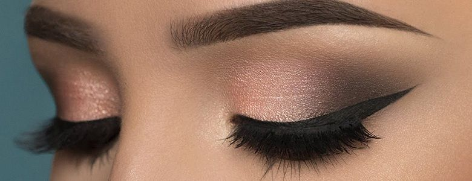
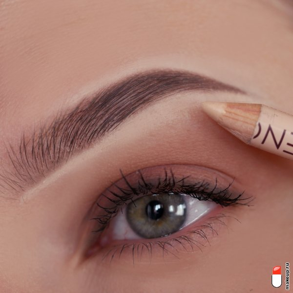

Прежде чем приступать к созданию красивых бровей, нужно выбрать время и место, запастись инструментами и подготовить лицо к процедуре.
Как подготовиться к коррекции бровей
- Выберите время и место
- Соберите всё, что понадобится для коррекции бровей
- Зеркало.
- Хорошо заточенный пинцет.
- Длинный тонкий предмет: апельсиновая палочка, карандаш, ручка, кисть и тому подобное.
- Белый карандаш для глаз.
- Ватные диски.
- Дезинфицирующее средство.
- Щёточка для бровей.
- Мицеллярная вода.
- Лосьон для депиляции.
- Увлажняющее молочко или лосьон.
- Подготовьте лицо
Как найти подходящую вам форму бровей

Учитывайте не только форму лица, но и то, как растут ваши брови. Не старайтесь изменить их форму слишком радикально. Например, если от природы брови прямые, не стоит делать их изогнутыми. Иначе вы рискуете выщипать большую часть волос.
- Определите начало брови
- Найдите наивысшую точку брови
- Определите конец брови
- Задайте направление хвостика брови
- Прорисуйте нижние контуры брови
Как выщипать брови
Вам нужно удалить все волоски под белой линией и между двумя точками на переносице. Перед этим продезинфицируйте пинцет и вымойте руки. Потом щёточкой зачешите брови вверх.

Располагая пинцет ближе к основанию волос, выщипывайте их по одному не очень резкими движениями. Дёргайте строго по направлению роста, чтобы избежать заломов, микротравм и появления вросших волосков. Чтобы уменьшить боль, слегка натягивайте кожу.
Не подстригайте брови маникюрными ножницами. Из-за этого изменяется направление роста волоса и потом это будет сложно скорректировать.